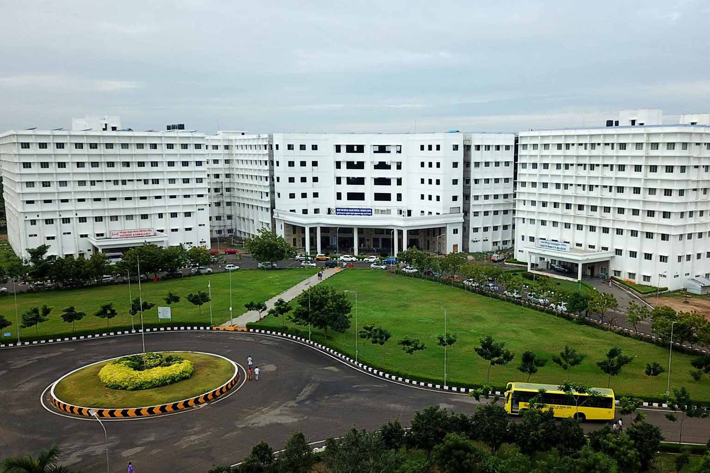
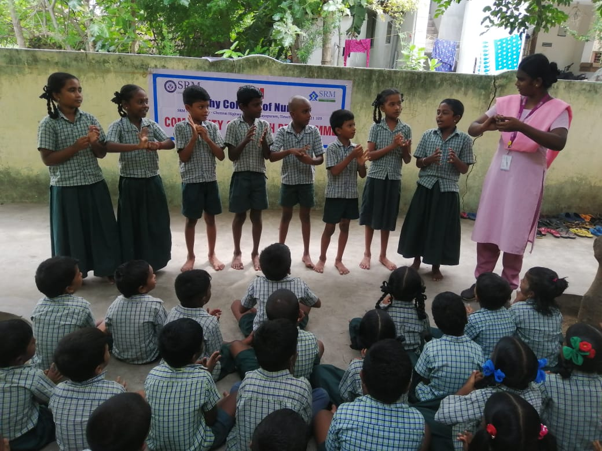
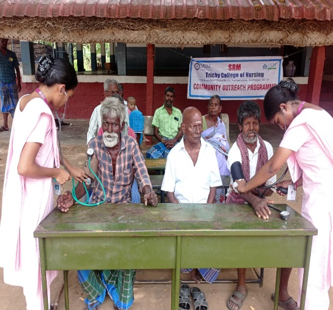
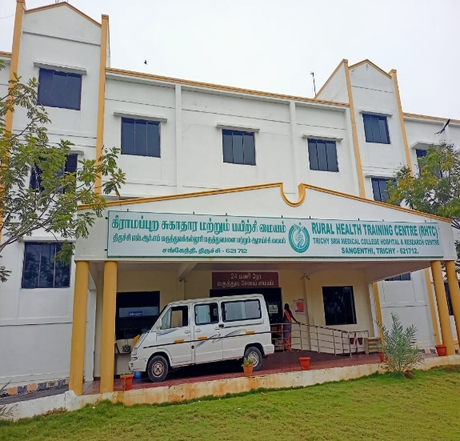

Trichy SRM Medical College Hospital & Research Centre is a 1575 bedded multi-specialty teaching hospital equipped with advanced diagnostic and treatment technologies. It is led by experienced healthcare professionals providing quality care.
Affiliated to The Tamil Nadu Dr MGR Medical University and approved by Medical Council of India & Government of India.

Students are posted in Rural Health Training Centre at Sangenthi and Urban Health Training Centre at Samayapuram to deliver community healthcare services.
They are also trained at Government Public Health Centre at Sirugambur.


Rural and urban outreach programs are conducted regularly to provide essential healthcare services, promote awareness, and improve the overall well-being of the community.